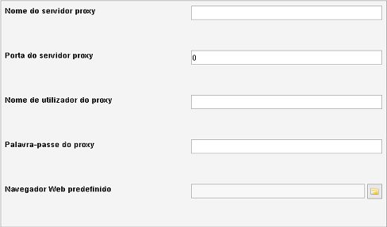

Definições de HTTP
Caminho de menu: Definições > Definições > Definições de HTTP
Se não utiliza um proxy e/ou não tem problemas em usar a procura online, pode-se manter afastado destas definições.
Se utiliza um proxy, pode configurá-lo aqui.

Nome do servidor proxy
O nome do servidor proxy tem de ser especificado quando utiliza um servidor proxy.
Porta do servidor proxy
Se utiliza um servidor proxy, tem de especificar o número da porta. Por predefinição é 0 (sem proxy). A maioria dos
servidores proxy estão definidos para a porta "8088"
Nome de utilizador do proxy
Se necessário, introduza o nome de utilizador para o servidor proxy.
Palavra-passe do proxy
Introduza a palavra-passe correspondente ao nome de utilizador
Navegador Web predefinido
Especifique qual o navegador que deve ser usado pelo Data Crow ao abrir hiperligações.
Por predefinição, o Data Crow tenta encontrar o navegador predefinido do seu sistema. Contudo, isto pode falhar, fazendo com que
os URLs não abram no seu navegador. Para evitar isto, especifique o seu navegador aqui.